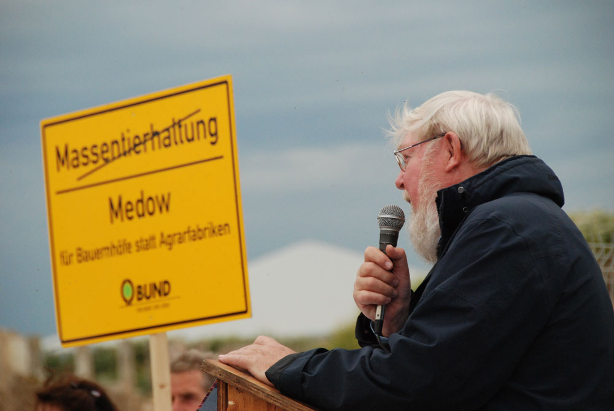

Kategorie: Landbewirtschaftung in Mecklenburg-Vorpommern · 16 Beiträge (statisches Archiv)
einwohner10.07.2012, 12:52 Uhr
steigender Flächenverbrauch u. Flächenkonkurrenz
Sogenannte bodenungebundene Massentierhaltungsanlagen wie die Ferkelfabrik in Alt Tellin (ca. 14 Fußballfelder wurden versiegelt) verbrauchen fruchtbares Ackerland.
Wie weit die dort produzierte u. über die Biogasanlage veredelte Gülle die Perspektive der Nahrungsmittelproduktion positiv befördern kann, ist durchaus anzuzweifeln.
Im Dunstkreis solcher Anlagen expandiert der Maisanbau u. so einiges an Getreide wird entweder zur Gülleerzeugung verfüttert oder dieser zugeführt.
Hier im Forum sollte die Existenz dieser Landbewirtschaftung in MV u. ihrer Folgen für die Menschen im Land nicht unterschlagen werden. [Anhang: <!-- ia0 -->Succow-Pult-1000.jpg<!-- ia0 -->]
Der alternative Nobelpreisträger Prof. Succow hofft, dass eine Agrarwende hilft, dem "globalen Wahnsinn" etwas entgegenzusetzen. http://www.youtube.com/watch?v=U5C_R4ConOs&feature=plcp/
Dieser Hoffnung schließe ich mich gerne an.
Wenn in MV ein gewaltiges Atomkraftwerk zurückgebaut werden kann, warum sollte dass nicht auch für die imageschädigenden Tierfabriken im Uraubs- u. Gesundheitsland möglich sein!

Succow-Pult-1000.jpg
Landmaus10.07.2012, 13:48 Uhr
Re: steigender Flächenverbrauch u. Flächenkonkurrenz
Ich finde es richtig, dass sich viele Menschen Gedanken über den stetig steigenden Flächenverbrauch machen. Hier sollten wir folgenden Gedankengängen Raum geben: es sind nicht unbedingt die größeren Tierhaltungsanlagen, die uns besorgt werden lassen sollten, mich verunsichert die Tatsache, dass durch Förderung der Ballungscentren immer stärker die ländlichen Regionen ausgeblutet werden. Durch die Zentralisierung von Behörden und Ämtern sind Menschen gezwungen, die Heimatdörfer zu verlassen und sich in den Großstädten anzusiedeln. Es kommt dort zu immer neuen Wohnsiedlungen, die wirklich Ackerland kosten,und die Dörfer bleiben mit leeren Häusern und alter Bevölkerung zurück. Außerdem kosten irrsinnige "Ausgleichsmaßnahmen" enorm kostbares Land. Warum muß für den Bau einer Windkraftanlage oder Biogasanlage Ackerland in unproduktives Unland umgewandelt werden, warum kann nicht statt dessen ein Geldbetrag für bestehende Umweltaktionen gezahlt werden oder alte Gebäude abgerissen und das Land wieder urbar gemacht werden. Wie kann man von EU Seite dazu neigen, Förderung der Landwirtschaft an so etwas unsinniges wie "Greening" zu knüpfen. Greening ist nichts anderes , als Stilllegung von 7 % der Ackerflächen. Wer redet denn ehrlich über die 1 Milliarden Menschen, die auf der Erde hungern und nimmt gleichzeitig landwirtschaftliche Flächen in Millionen ha Größe aus der Produktion. So dekadent kann man nur entscheiden, wenn man jeden Tag selber satt zu essen hat und über fremden Hunger drüber weg sehen kann. Wir brauchen einen Flächenschutz- um hoch produktiov auf unseren begünstigten Ländereien Lebensmittel und Rohstoffe für Industrie und Energiegewinnung zu produzieren.
Jan Reimond10.07.2012, 15:07 Uhr
Re: steigender Flächenverbrauch u. Flächenkonkurrenz
@landmaus:
Ihren ersten Gedankengänge über Zentralisierung und Entleerung des ländlichen "peripheren" Raumes (MV) kann ich folgen. Raumplaner wissen, dass die Instrumente für eine großräumige Ansiedlungssteuerung fehlen. Das Grundgesetz garantiert die freie Wahl, seinen Wohnsitz zu nehmen wo man will. Unternehmen mit großer Wertschöpfung, Konzerne und nachgelagerte Dienstleister etc. werden immer in die Ballungszentren gehen, um bestimmte Vorteile zu nutzen z.B. Nähe zu Wirtschaftspartnern, Gewinnung qualifizierter Mitarbeiter, trotz des knappen und teuren Bodens.
1990 und kurz danach war die historische Chance da, die Zentralen von Großunternehmen gezielt nach Ost-Deutschland zu bewegen. Die Treuhand hätte entsprechende Auflagen für Konzerne machen können. Wenn heute die Zentralen von BASF, RWE oder Rheinmetall in Leipzig, Rostock oder Dresden säßen, sähe es im Osten ganz anders aus.
Eine Förderung für den Abriß bracher DDR-Stallanlagen finde ich sinnvoll, um das Ortsbild zu verbessern, wenn sonst niemand dort investiert. MV hat ein großes Potenzial, sich bundesweit mit gepflegten Dörfern, mit historischer Substanz und (relativ) intakten Naturgütern wie Seen, kaum Lärm und frischer Luft zu profilieren. Das "Greening" ist sinnvoll. Es gibt tatsächlich den Zuzug von gestressten und Natur suchenden Menschen aus den Ballungsgebieten, hin in die Dörfer in MV. Alte Gusthäuser, Bauernhäuser und Resthöfe werden neu besiedelt. Handwerker bekommen Aufträge, der Einzelhandel und Kulturangebote werden belebt.
Die Tiermast-Großmastanlagen, die hier massiv gefördert werden - z.B. Klein Daberkow bei Strasburg 400 000er-Hähnchenmastanlage: hier werden 4 ha bester Ackerboden versiegelt, es werden jährlich ca. 12 Tonnen Ammoniak emittiert und 6 to. Feinstaub, Filter gibt es nicht; es entstehen exakt 2x1 fester Arbeitsplatz laut Antragsunterlagen, hierfür fließen ca. 1 Mio. € Landesmittel und EU-Beihilfen !!! - sehe ich allerdings sehr kritisch. Soleche Projekte gehen in die völlig falsche Richtung, sie haben keine Zukunft und sie haben auch keine öffentliche Förderung verdient.
Wir in Deutschland sind übrigens m.E. nicht verantwortlich, die Welt zu ernähren. "We feed the world" ist ein vermessener, eurozentrischer und arroganter Anspruch. Weltweit muß es - an jedem Ort bzw. in jeder Region - um das Recht auf Land, um Ernährungssicherheit und um Souveränität bei der Agrarproduktion gehen. Die Umverteilung von Land ist ein Thema. In Afrika fordern Kleinbauern: Schluß mit den Fleischimporten der EU. Länder wie Kamerun haben kürzlich Importverbote für EU-Fleisch verhängt, um die einheimische Tierproduktion zu schützen. Deshalb kritisieren die Evangelischen Kirchen zurecht die EU-Fleischexporte. Mehr dazu auf <!-- m --><a class="postlink" href="http://www.fian.de">http://www.fian.de</a><!-- m -->
landkind10.07.2012, 18:44 Uhr
Re: steigender Flächenverbrauch u. Flächenkonkurrenz
@ Jan Reimond
"We feed the world" kann tatsaechlich nicht der Anspruch sein. Fakt ist allerdings das wir in Deutschland einen der weltweit am beguenstigsten Naturraume fuer die agrarische Produktion vorfinden. Boden und Klima sind das Eine, gut ausgebildete Menschen das Andere. Ich muss mich daher der Vorrednerin anschliessen und eine, willentlich durch Agrarumweltmassnahmen und sog. "Greening" herbeigefuehrte Minderung des Ertragspotenzials als dekadent und von "Wohlstands-fetten-Hirnen" produzierte Idee bezeichnen.
Ich frage mich desweiteren, warum Emmissionsrechte der Industrien ueber Laendergrenzen hinweg handelbar sind. Das Greening aber standort- und natrurraumunabhaengig pauschal fuer die Nationalstaaten festgesetzt wird. Waere es nicht sinnvoller, auch hier flexiblere Regelungen einzufuehren, die es erlaubten Hochertragsstandorte gemaess ihres Potentials zu nutzen und oekologische Vorrangflaechen auf Grenzstandorte zu verlagern? Dies haette vor allem den Charme das Produktionsmittel wie Duenger und Pflanzenschutz viel effizienter eingesetzt werden wuerden.
Ueber die Groesse von Mastanlagen kann man mit Sicherheit geteilter Meinung sein. Das dabei nur wenige Arbeitsplaetze entstehen ist sicherlich richtig. Ich moechte aber eimal anregen darueber nachzudenken wer dort Arbeit finden kann? Es sind sicherlich nicht Menschen wie Sie und ich mit guter, fundierter Ausbildung, oertlich flexibel, weil finaziell unabhaengig, sondern oftmals Menschen die vielleicht durch Haus und Grund gebunden, durch mangelhafte Ausbildung zusaetzlich unbeweglich in den angrenzenden Doerfern ihre Heimat haben.
Meiner Meinung nach hinkt auch der oftmals zitierte negative Einfluss auf den Tourismus in unserem Land. Die Arbeitsplaetze dort sind meist saisongebunden und konzentrieren sich ebenfalls auf die touristischen Zentren. Der Glaube ganz Mecklenburg koennte vom Tourismus profitieren, ist doch unhaltbar. Allein in unserer Nachbarschaft (Nordwest-Mecklenburg) finden sich zwei gescheiterte Tourismusengagements, aber zahlreiche erfolgreiche, den Menschen arbeit bietende landwirtschaftliche Unternehmen inklusiver Ihrer Mastanlagen.
Studentin10.07.2012, 19:52 Uhr
Re: steigender Flächenverbrauch u. Flächenkonkurrenz
Ich schließe mich der Meinung von Jan Reimond bzgl. dieser großindustriellen Mastanlangen an. Durch diese Art der Fleischproduktion werden nicht nur die einheimischen Kleinbauern an den Rand ihrer Existenz gedrängt; auch die Landwirtschaft derjenigen Länder wird auf Dauer ruiniert, die dieses billige Fleisch aus Europa importieren (müssen). Es ist m.E. schon bedenklich, wenn importiertes Fleisch billiger ist als das im eigenen Land produzierte...
Was dazukommt, ist, dass diese Großmastanlagen Unmengen an Futtermittel (zumeist Soja) benötigen - und das wird ebenfalls importiert, z.B. aus Südamerika. Dort wiederum werden - wie sicherlich bekannt sein dürfte - ganze Dorfgemeinschaften durch Großbauern von ihrem eigenen Land vertrieben, um Platz für zig Hektar Sojafelder zu schaffen. Was für soziale Folgen das in diesen Soja exportierenden Ländern hat, möchte ich an dieser Stelle nicht weiter ausführen. Ich möchte nur aufzeigen, dass die großindustrielle Massenproduktion von Fleisch, wie sie derzeit u.a. in MV praktiziert wird, nicht nur regionale, sondern auch internationale Auswirkungen hat. Darüber sollte man in meinen Augen ebenfalls nachdenken, wenn es darum geht, ob derartige Mastanlagen weiter genehmigt und v.a. auch gefördert werden. Und wenn beides mit "ja" beantwortet wird, dann stellt sich mir die Frage, warum die dafür benötigten Futtermittel nicht aus regionalem Anbau stammen können. Zugegeben, dadurch wird der Broiler teurer (und zu Lebzeiten nicht unbedingt glücklicher), aber der Bezug von regionalem Futter hätte auch den Vorteil, dass die Landwirte hierzulande einen Abnehmer für ihr Getreide fänden und nicht alles in die Biogasanlagen gesteckt werden müsste. Ich denke aber, dass es Möglichkeiten gäbe, z.B. im Rahmen von (geförderten) Kooperationen zwischen Landwirten und Mastanlagenbetreibern eine regionale Versorgung mit Futtermitteln sicherzustellen.
Das Thema Biogas wäre dazu auch noch ein Thema, was es zu diskutieren gäbe - warum müssen Mais & Co. im wahrsten Sinne verheizt werden, wenn man es auch für die Nahrungsmittelproduktion, oder im obigen Fall, für die Futtermittelproduktion verwenden könnte? Das ist für mich die wahre, perverse Verschwendung von Lebensmitteln in diesem reichen Europa...
Landratte11.07.2012, 11:52 Uhr
Re: steigender Flächenverbrauch u. Flächenkonkurrenz
Landmaus hat geschrieben:
Wer redet denn ehrlich über die 1 Milliarden Menschen, die auf der Erde hungern und nimmt gleichzeitig landwirtschaftliche Flächen in Millionen ha Größe aus der Produktion. So dekadent kann man nur entscheiden, wenn man jeden Tag selber satt zu essen hat und über fremden Hunger drüber weg sehen kann. Wir brauchen einen Flächenschutz- um hoch produktiov auf unseren begünstigten Ländereien Lebensmittel und Rohstoffe für Industrie und Energiegewinnung zu produzieren.
Ja, was soll man dazu sagen. In den aktuellen Nachrichten wurde gemeldet, dass 54 afrikanische Flüchtlinge Ihre Reise zu uns im Schlauchboot nicht überlebt haben.
Sie riskierten alles, um nach Europa zu gelangen. <!-- m --><a class="postlink" href="http://www.zeit.de/gesellschaft/zeitgeschehen/2012-07/fluechtlinge-libyen-mittelmeer">http://www.zeit.de/gesellschaft/zeitges ... mittelmeer</a><!-- m -->
Der Export von Produkten aus unseren begünstigten Ländereien wird dazu beigetragen haben.
Sie schwammen inmitten von etwa 300 Milliarden Mikroabfallteilen. Der größte Abfall-Anteil davon ist Plastik aus unserer Industrieproduktion.
Und die soll wachsen, auch in MV? Der Weltagrar-Bericht sieht Investitionen in die kleinbäuerliche Produktion als das dringendste und sicherste Mittel an, Hunger zu bekämpfen und zugleich die ökologischen Auswirkungen der Landwirtschaft zu minimieren.
<!-- m --><a class="postlink" href="http://weltagrarbericht.zs-intern.de/landwirtschaft/">http://weltagrarbericht.zs-intern.de/landwirtschaft/</a><!-- m -->
Jan Reimond11.07.2012, 13:19 Uhr
Re: steigender Flächenverbrauch u. Flächenkonkurrenz
1. Ihr Argument der begünstigten Naturräume ist natürlich zu bedenken:
Jedoch hat eben diese Intensivnutzung der begünstigten Räume zum Artenverlust geführt, wie Grünlandumbruch zugunsten von Maisäckern ... deshalb steht z.B. der Schreiadler, für den MV besondere Verantwortung trägt, am Rande des Aussterbens. Bodenerosion, die u.a. durch mechanische Überbeanspruchung der Ackerböden und durch Reihenkulturen wie Mais ausgelöst wird, führt in MV zu langfristigen Verlusten der Ackerkrume. Es sind 25 % der Böden im Land winderosionsgefährdet (STudie des ZALF 2002). Eine Aufspaltung in Hochertragsregionen und Grenzstandorte über die Greening-Verortung würde die Disparitäten der Räume noch verstärken. Das Greening muß auf der ganzen Landesfläche stattfinden, und es kommt einer langfristig orientierten Landwirtschaft entgegen meine ich.
2. Tierhaltung kann auch ganz anders aussehen. z.B. kann man Schweine auch effizient und intensiv im Freiland halten. Sie leben überwiegend direkt an den Feldern in Hütten. Einem erhöhten Arbeitsaufwand steht eine bessere Tiergesundheit und Fleischqualität gegenüber. Entsprechende Praxisversuche in Holland waren erfolgreich. Ich weiß von jungen Landwirten, die das auch in MV versuchen wollten. Sie erhielten aber trotz aller Bemühungen keine Pachtflächen durch die Landgesellschaft. Innovationen in der Tierzucht werden auf diese Weise verhindert (die Landgesellschaften werden wesentlich durch Landesregierung und Bauernverband gebildet ...).
Im übrigen habe ich mit kleineren Stallanlagen bis 500 Tiere per se nicht die Probleme, sondern mit diesen abgeschotteten und räumlich nicht integrierten Massentierfabriken.
3. Weshalb nicht alle Tourismusprojekte im Lande funktionieren, muß man sich im einzelnen ansehen. Da gibt es vielfältige mögliche Ursachen. Generell muß man halt einen langen Atem haben, kreative Ideen generieren, an die Vision glauben und konsequent dran arbeiten.
Der Spreewald hat sich auch erst über 15 Jahre neu als Urlaubsregion aufstellen und entwickeln müssen. Heute profitiert die Region enorm von der Aufbauarbeit.
landkind hat geschrieben:
@ Jan Reimond
"We feed the world" kann tatsaechlich nicht der Anspruch sein. Fakt ist allerdings das wir in Deutschland einen der weltweit am beguenstigsten Naturraume fuer die agrarische Produktion vorfinden. Boden und Klima sind das Eine, gut ausgebildete Menschen das Andere. Ich muss mich daher der Vorrednerin anschliessen und eine, willentlich durch Agrarumweltmassnahmen und sog. "Greening" herbeigefuehrte Minderung des Ertragspotenzials als dekadent und von "Wohlstands-fetten-Hirnen" produzierte Idee bezeichnen.
Ich frage mich desweiteren, warum Emmissionsrechte der Industrien ueber Laendergrenzen hinweg handelbar sind. Das Greening aber standort- und natrurraumunabhaengig pauschal fuer die Nationalstaaten festgesetzt wird. Waere es nicht sinnvoller, auch hier flexiblere Regelungen einzufuehren, die es erlaubten Hochertragsstandorte gemaess ihres Potentials zu nutzen und oekologische Vorrangflaechen auf Grenzstandorte zu verlagern? Dies haette vor allem den Charme das Produktionsmittel wie Duenger und Pflanzenschutz viel effizienter eingesetzt werden wuerden.
Ueber die Groesse von Mastanlagen kann man mit Sicherheit geteilter Meinung sein. Das dabei nur wenige Arbeitsplaetze entstehen ist sicherlich richtig. Ich moechte aber eimal anregen darueber nachzudenken wer dort Arbeit finden kann? Es sind sicherlich nicht Menschen wie Sie und ich mit guter, fundierter Ausbildung, oertlich flexibel, weil finaziell unabhaengig, sondern oftmals Menschen die vielleicht durch Haus und Grund gebunden, durch mangelhafte Ausbildung zusaetzlich unbeweglich in den angrenzenden Doerfern ihre Heimat haben.
Meiner Meinung nach hinkt auch der oftmals zitierte negative Einfluss auf den Tourismus in unserem Land. Die Arbeitsplaetze dort sind meist saisongebunden und konzentrieren sich ebenfalls auf die touristischen Zentren. Der Glaube ganz Mecklenburg koennte vom Tourismus profitieren, ist doch unhaltbar. Allein in unserer Nachbarschaft (Nordwest-Mecklenburg) finden sich zwei gescheiterte Tourismusengagements, aber zahlreiche erfolgreiche, den Menschen arbeit bietende landwirtschaftliche Unternehmen inklusiver Ihrer Mastanlagen.
Schwalbe12.07.2012, 16:08 Uhr
Re: steigender Flächenverbrauch u. Flächenkonkurrenz
Der Bau von neuen, immer größeren Biogasanlagen ist in diesem Zusammenhang zu hinterfragen. Eine gute Idee (Resteverwertung) ist pervertiert. Jetzt wird großflächig Mais angebaut, die Rückstände der intensiven Düngung werden sich im Grundwasser und letztendlich in der Ostsee finden. Wer stoppt endlich diesen Wahnsinn? Auch die großen Tierhaltungsanlagen braucht hier niemand. Ich finde nicht einen positiven Aspekt. In der näheren Umgebung verliert Wohneigentum rasant an Wert, Anwohner sind Lärm- und Geruchsbelästigungen, sowie Gesundheitsgefährdungen durch Feinstäube, Viren oder multiresistente Bakterien ausgesetzt. Eine ausgewogene, vielseitige Entwicklung der Region wird blockiert, Tourismusprojekte lassen sich in der Nähe solcher Großanlagen nicht verwirklichen. Durch das Ausbringen von Gülle oder Mist in der Umgebung wird früher oder später das Grundwasser belastet, ebenso wie Oberflächengewässer. Ammoniak und Stickstoff schädigen Wälder und benachbarte Biotope. Behörden sind für die Kontrolle solcher überdimensionierten Anlagen in keiner Weise ausreichend ausgestattet. Arbeitsplätze werden kaum geschaffen, dafür aber vernichtet. Bauern, die Tiere vernünftig halten, sind diesem Verdrängungswettbewerb nicht gewachsen. In Südamerika wird furchtbarer Umweltfrevel begangen, um z.B. Soja für die Tiermast anzubauen. Durch deutsche Fleischexporte, die auch noch subventioniert werden, wird der Aufbau bäuerlicher Strukturen in Entwicklungsländern torpediert. Sehenden Auges wird mit unseren Lebensgrundlagen Schindluder getrieben. Was wollen wir unseren Kindern hinterlassen? Einen entvölkerten ländlichen Raum mit Maisfeldern bis zum Horizont, dazwischen Tierfabriken, hermetisch abgeschlossen, damit von dem Grauen, was hinter diesen Mauern stattfindet nichts nach außen dringt, und das Fleisch sich trotzdem gut verkauft, Wasser, das man nicht mehr trinken kann, verdreckte Seen und Flüsse...
Landratte12.07.2012, 17:07 Uhr
Re: steigender Flächenverbrauch u. Flächenkonkurrenz
Wie weit hat uns die Euro -u. Bankenkrise eigentlich schon gebracht? Ich hatte mal die Hoffnung, dass wenn das Vertrauen in diesen globalen Wahnsinn verschwindet, der praktizierte Irrsinn deutlicher wird. Aber das Gegenteil passiert.
Wie kann man denn ernsthaft dafür eintreten, dass irgendwelche sogenannte Investoren durch den Bau überdimensionierter Tierkonzentrationsanlagen, die nur wenige Arbeitsplätze bringen, in ganzen Regionen andere Entwicklungsmöglichkeiten langfristig zerstören? Minderbemittelte sollen dafür gesundheitsschädigende Sklavenarbeit auf sich nehmen (natürlich freiwillig im Rahmen der geltenden Gesetzt) statt im notwendigen gemeinwohlorientierten Ehrenamt tätig werden zu können, nur damit einige wenige ihren persönlichen Profit maximieren können.
landkind hat geschrieben:
@ Jan Reimond
Ueber die Groesse von Mastanlagen kann man mit Sicherheit geteilter Meinung sein. Das dabei nur wenige Arbeitsplaetze entstehen ist sicherlich richtig. Ich moechte aber eimal anregen darueber nachzudenken wer dort Arbeit finden kann? Es sind sicherlich nicht Menschen wie Sie und ich mit guter, fundierter Ausbildung, oertlich flexibel, weil finaziell unabhaengig, sondern oftmals Menschen die vielleicht durch Haus und Grund gebunden, durch mangelhafte Ausbildung zusaetzlich unbeweglich in den angrenzenden Doerfern ihre Heimat haben.
Selbstverständlich müssen diese Menschen finanziert werden. Aber bitte für notwendige Arbeit u. nicht dafür, den Planeten u. unser Gemeinwesen zugrunde zu richten.
Eine Umverteilung im EU-Haushalt ist also gefragt. Weniger Geld an die Banken, die dieses spekulativ in unseren Boden u. die darauf zu errichtenden Tierfabriken stecken.
Studentin12.07.2012, 18:28 Uhr
Re: steigender Flächenverbrauch u. Flächenkonkurrenz
Da kann ich meinen beiden Vorrednern nur beipflichten. Ich habe das Problem mit den Entwicklungsländern bzw. Futter produzierenden Ländern weiter oben ja schon angesprochen und will darauf jetzt nicht mehr näher eingehen.
Landratte hat geschrieben:
Der Weltagrar-Bericht sieht Investitionen in die kleinbäuerliche Produktion als das dringendste und sicherste Mittel an, Hunger zu bekämpfen und zugleich die ökologischen Auswirkungen der Landwirtschaft zu minimieren.
<!-- m --><a class="postlink" href="http://weltagrarbericht.zs-intern.de/landwirtschaft/">http://weltagrarbericht.zs-intern.de/landwirtschaft/</a><!-- m -->
Ich denke, das ist schon einmal eine richtungsweisende Aussage. Nicht immer größer sollten die Tiermastanlagen (oder "Tierkonzentrationsanlagen", wie Landratte es überspitzt, aber zutreffend benannt hat) sein, sondern der Trend sollte zu kleineren Betrieben und Höfen gehen, die mehr Wert auf Qualität und tierwürdige Bedingungen legen als auf schiere Masse. Wenn ich sehe, dass das Schweinefleisch im Geschäft in seinem eigenen Saft schwimmt, dann weiß ich, dass das Tier im Stress gestorben ist (vielleicht hat es seinen Tod ja sogar noch mitbekommen? Gerade diese Woche stand ja wieder etwas über die z.T. ungenügenden Betäubungsmethoden in Großschlachtereien in der OZ). Soll das artgerecht sein?
In der Kleinteiligkeit und regionalen Vielfalt, will ich meinen, liegt die Stärke für unser Land. Und wenn die vielen Klein(st)bauern sich in Vermarktungsgesellschaften zusammenfinden, ihre Kräfte also bündeln, dann dürfte das m.E. auch zukunftsträchtig und konkurrenzfähig gegenüber Großindustriellen sein. Ich denke da nur einmal an das Beispiel Hansano - viele Milchbauern schließen sich zusammen und produzieren qualitativ hochwertige und zugleich preiswerte Lebensmittel!Und was einmal geht, lässt sich doch sicherlich wiederholen?
Ich bin außerdem der Meinung, dass wenn es gelingt, die Menschen davon zu überzeugen, dass Fleisch und Wurst wieder als etwas Besonderes und nicht Alltägliches angesehen wird und dafür auch etwas mehr Geld für hochwertigere Lebensmittel ausgegeben wird, solche Großmastanlagen ihrer Existenzsberechtigung/-grundlage entzogen würden und dann die kleineren Betriebe die rentable Alternative darstellen. Daher ist nicht nur ein Umdenken im Produktionsprozess gefragt, sondern in erster Linie muss auch der Verbraucher mit ins Boot geholt werden. Solange es immer heißt "Hauptsache billig", wird sich an den derzeitigen Bedingungen nichts ändern. Da fällt mir gerade ein: bei den Zigaretten hat man seit ein paar Jahren ja auch so besinnliche Sprüche wie "Rauchen gefährdet die Gesundheit" auf die Verpackungen geklebt. Wie wäre es da, wenn man auf die Wurst- und Fleischverpackungen, zumindest aber an die Auslagetheken, Texte wie "Das Fleisch könnte von lebendig zerlegten Tieren stammen" oder "Dieses Fleisch wurde durch die Zerstörung von Entwicklungsländern produziert" oder gar entsprechende Bilder befestigt? Das scheint zwar radikal, aber vielleicht könnte das zu einem Umdenken in der Bevölkerung führen.
Agripinia17.07.2012, 11:42 Uhr
Re: steigender Flächenverbrauch u. Flächenkonkurrenz
Ich bin außerdem der Meinung, dass wenn es gelingt, die Menschen davon zu überzeugen, dass Fleisch und Wurst wieder als etwas Besonderes und nicht Alltägliches angesehen wird und dafür auch etwas mehr Geld für hochwertigere Lebensmittel ausgegeben wird, solche Großmastanlagen ihrer Existenzsberechtigung/-grundlage entzogen würden und dann die kleineren Betriebe die rentable Alternative darstellen.
Absolut d'accord.
Aber genau das ist doch die Frage!!!!
Wie stellt man so etwas an????
Das himmelschreiende Problem ist doch, dass die deutliche Mehrzahl der Verbraucher / Konsumenten von Nahrungsmitteln in Deutschland und dem westlichen Europa sagt, Lebensmittel sollen ökologisch, nachhaltig und umwelt-, wie tiergerecht produziert werden aber der Preis soll dem der "konventionell" erzeugten Nahrungsmittel gleichen.
Dabei liegt doch auf der Hand dass eine ökologische, nachhaltige und umwelt-, wie tiergerechte Produktion mehr Aufwand und damit mehr Kosten bedeutet. Folglich muss der Produzent auch mehr bekommen.
Zum einen erhält er ja schon einen Ausgleich vom Staat über sogenannte Extensivierungsrichtlinien oder besondere Fördermaßnahmen. Aber wollen wirklich, dass der Staat einen Produktionsbereich stützt, den der Verbraucher nicht bereit ist, mit seinem Konsumverhalten zu stützen?
Also, wie wird es der Bevölkerung kommuniziert? Und wie bekommt man den Verbraucher dazu einen höheren Preis für ein Produkt zu bezahlen, dass er unter Umständen für die Hälfte haben kann? (Vergessen wir nicht, auch konventionelles Essen kann schmecken und sättigt.)
Landmaus18.07.2012, 08:46 Uhr
Re: steigender Flächenverbrauch u. Flächenkonkurrenz
kleinere Höfe und wenige Tiere auf den Standorten zu verlangen ist erst einmal populär. Wir sind aber nicht auf einer Insel der Glückseeligen, wir stehen als Wirtschaftszweig im internationalen Wettbewerb und Vergleich. Wenn wir uns eine Landwirtschaft nach den oben beschriebenen Maßstäben leisten wollen, dann geht das auch... wenn wir uns mit Zöllen vom internationalen Markt abschotten. Dann darf kein Getreide aus den GUS Staaten mehr zu uns kommen, kein Fleisch aus Argentinien, keine Eier und Schweinehälften aus Brasilien und ,und ,und. Dann muß der Verbraucher bereit sein, die real anfallenden Kosten für die Produkte auch wirklich im Laden zu bezahlen.
Schwalbe18.07.2012, 10:17 Uhr
Re: steigender Flächenverbrauch u. Flächenkonkurrenz
"Aus der bisherigen Analyse
ergeben sich drei grundlegende Strategieansätze, auf die Einhaltung ökologischer Grenzen
hinzuwirken:
– Zunächst müssen auf den relevanten Ebenen – je nach Art des Umweltgutes auf globaler,
europäischer, nationaler oder ggf. auch sub-nationaler Ebene – Umweltziele formuliert
und institutionalisiert werden, die mindestens die Einhaltung wissenschaftlich fundierter
Grenzen der Tragekapazität sicherstellen.
– Mit Blick auf diese Ziele müssen Strategien für eine weitreichende Transformation der
Industriegesellschaft entwickelt werden, die neben einem radikalen Technikwandel auch
soziale Innovationen und Veränderungen der Konsum- und Lebensstile anstoßen
müssen."
– Schließlich müssen zentrale gesellschaftliche Funktionssysteme auf eine Zukunft
vorbereitet werden, in der die Volkswirtschaft nur in sehr geringem Maße wächst. Dies ist
nur durch eine Abkehr von der bisher dominanten Strategie zu erreichen, die soziale Ziele
durch eine Erhöhung des Wirtschaftswachstums zu erreichen versucht. Je besser dies
gelingt, umso unabhängiger wird die Gesellschaft von einem fortgesetzten
Wirtschaftswachstum. (Umweltgutachten 2012 des Sachverständigenrates für Umweltfragen)
Da hier oft der Verbraucher für bestimmte Fehlentwicklungen verantwortlich gemacht wird, möchte ich auch noch folgendes Zitat aus dem Umweltgutachten beifügen:
"Zudem ist der Einzelne als
Konsument angesichts allgemeiner moralischer Appelle zu umweltfreundlichem Konsum,
aber entgegengesetzter realer Anreize, häufig überfordert. Umweltverträglicher Konsum ist
somit eine gesamtgesellschaftliche Herausforderung, die eine kollektive
Verantwortungsübernahme erfordert sowie die Schaffung von Strukturen, die dem Einzelnen
umweltfreundlichen Konsum erleichtern und ermöglichen. Die negativen Auswirkungen der
derzeitigen Konsummuster im Bereich Ernährung auf die Umwelt, auf Menschen in anderen
Ländern und auf nachfolgende Generationen sind hinreichend gravierend, um Eingriffe der
Politik zu rechtfertigen.
Im Lichte der Faktoren, die einem umweltverträglichen Konsum gegenwärtig
entgegenwirken, sollte die Politik Maßnahmen ergreifen, die unerwünschte Einflussnahmen
abbauen oder verhindern. Sie könnte zum Beispiel durch Einschränkung der Werbung für
bestimmte Produkte oder für bestimmte Zielgruppen (bereits latent vorhandene) Präferenzen
für umweltfreundliche Lebensmittel aktivieren und stärken sowie instabile
Verbraucherpräferenzen in Richtung umweltgerechter Konsummuster lenken. Außerdem
sollten bestehende verzerrende ökonomische Anreize abgeschafft werden, möglichst durch
die Internalisierung externer ökologischer und auch sozialer Kosten in die Preisgestaltung."
Schwalbe19.07.2012, 07:42 Uhr
Re: steigender Flächenverbrauch u. Flächenkonkurrenz
Landmaus schrieb:" Dann muß der Verbraucher bereit sein, die real anfallenden Kosten für die Produkte auch wirklich im Laden zu bezahlen."
Wie gesagt, ich sehe hier die Politik in der Pflicht, Fehlentwicklungen zu korrigieren und falsche Anreize beim Kauf von Lebensmitteln zu beseitigen.
Jan Reimond schrieb: "Wenn ich aber weiß, daß das Landwirtschaftsministerium für eine Intensivmastanlage (2x200 000 Hähnchen), die laut Antrag exakt 2x1 Arbeitsplatz schafft sowie "mehrere Aushilfsjobs", 1 Mio. € Beihilfen = 1 000 000 € !! zuschießt, geht mir der Hut hoch.
Pro Arbeitsplatz fördert das Haus Backhaus die Anlage mit 500 000 € aus Steuergeldern."
Aus der Anlage für 400000 Hähnchen in Klein Daberkow wird massenhaft billiges Hähnchenfleisch auf den Markt kommen, unterstützt durch die Millionensubvention aus dem Landwirtschaftsministerium. Geht es in den Export wird auch das subventioniert. Das sind für mich klassische Fehlanreize!
Würde man dagegen in die Preisgestaltung ökologische und soziale Kosten einbeziehen, müsste Fleisch aus Massentierhaltung extrem teuer sein. Es kann nicht so weitergehen, dass Gewinne privatisiert und Kosten vergesellschaftet werden. Und die Gewinner sind in der Regel nicht kleine Landwirte, sondern agrarindustrielle Konzerne.
Herr Straathof sollte die Kosten der verstärkten Kontrollen, die durch wiederholte Verstöße gegen Auflagen nötig werden, selber tragen und damit den Haushalt des Landkreises Vorpommern/Greifswald entlasten.
Und die Bürger werden von unserer Landesregierung und den untergeordneten Behörden (StALU) im Regen stehen gelassen. So muss die BI "Rettet das Landleben am Tollensetal" mit einem Anwalt dagegen vorgehen, dass ihr die Einsicht in das neue Brandschutzkonzept für die Ferkelfabrik in Alt Tellin verwehrt wird. "Hallo, Herr Backhaus! Wo bleiben denn da die Rechtsstaatlichkeit und die Beteiligung der Öffentlichkeit?" Bürger opfern ihre Freizeit und bringen finanzielle Mittel auf, um die Arbeit für Politiker und Behörden zu erledigen.
Landratte24.07.2012, 19:54 Uhr
Re: steigender Flächenverbrauch u. Flächenkonkurrenz
Schwalbe hat geschrieben:
"Hallo, Herr Backhaus! Wo bleiben denn da die Rechtsstaatlichkeit und die Beteiligung der Öffentlichkeit?" Bürger opfern ihre Freizeit und bringen finanzielle Mittel auf, um die Arbeit für Politiker und Behörden zu erledigen.
Schön, dass auf die Frage nach der Rechtsstaatlichkeit auch gleich die passende Antwort kommt:
"Bürger opfern ihre Freizeit und bringen finanzielle Mittel auf, um die Arbeit für Politiker und Behörden zu erledigen."
Solange nerven, bis die beste aller Schweinefabriken am Start ist.
Bürgerschaftliches Engagement bezeichnet eine Vielzahl freiwilliger gesellschaftlichen Aktivitäten von Individuen und Organisationen, die einen Bezug zu Demokratie und Gemeinwohl aufweisen... und im ländlichen Raum ist das dann eine Art Sterbehilfe für Demokratie u. Gemeinwohl.
einwohner18.11.2012, 23:54 Uhr
Re: steigender Flächenverbrauch u. Flächenkonkurrenz
Schwalbe hat geschrieben:
"Hallo, Herr Backhaus! Wo bleiben denn da die Rechtsstaatlichkeit und die Beteiligung der Öffentlichkeit?" Bürger opfern ihre Freizeit und bringen finanzielle Mittel auf, um die Arbeit für Politiker und Behörden zu erledigen.
Ja, die Kontrollen der Güllefabriken werden von Bürgerinitiativen auf den Weg gebracht.
Die Regierung dagegen verabschiedete ein „Gesetz zur Reduzierung und Beschleunigung von immissionsschutzrechtlichen Genehmigungsverfahren“.
Denn "Unternehmen die in Ställe investierten, hätten Anspruch auf Rechtssicherheit.
Investitionen in die Tierproduktion seien nicht zuletzt deshalb nötig, weil im Lande „ganze vier Schweine auf einem Fußballfeld“ ständen" polemisierte Minister Backhaus auf der agrarpolitischen Generaldebatte wärend der 30. Landtagssitzung am 26. Oktober.
Die Öffentlichkeitsbeteiligung im Rahmen der Erarbeitung seines Masterplanes ist aber weit dürftiger.
Statt der zuvor propagierten 15 000 Nutzern, die sich geäußert hätten, nannte der Minister auf der Agrarausschusssitzung am 15. November: "300 verwertbare, allerdings nicht repräsentative Stellungnahmen".
Aber wie kommt er zu repräsentativen Stellungnahmen? Die müssen da sein, wenn zur Grünen Woche unter dem Motte "Wir haben Agrarindustrie satt" wieder bundesweit demonstriert wird. Also hat er alle Ausschussmitglieder aufgerufen, sein Anliegen durch eigene Beiträge zu unterstützen, wobei es auch denkbar wäre, parlamentarische Initiativen der zurückliegenden Monate – unabhängig davon, ob sie zum Beschluss erhoben oder abgelehnt worden seien – mit in die Foren einzubringen.
Sein Fazit: Mehr Transparenz und mehr Öffentlichkeitsbeteiligung könne es nicht geben.[Anhang: <!-- ia0 -->schweinefresser.gif<!-- ia0 -->]
Hinter dieser Kulisse konnte der Güllefabrikant Straathof locker gegen die Nutzungsuntersagung von Schwarzbauten Widerspruch einlegen und weiter produzieren. Nicht nur heute ist Volkstrauertag